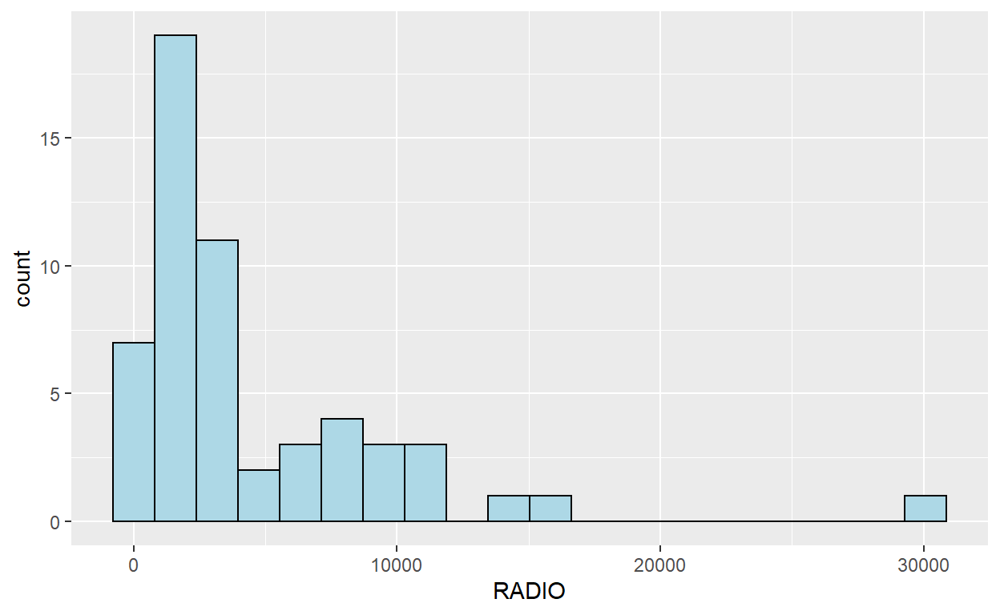
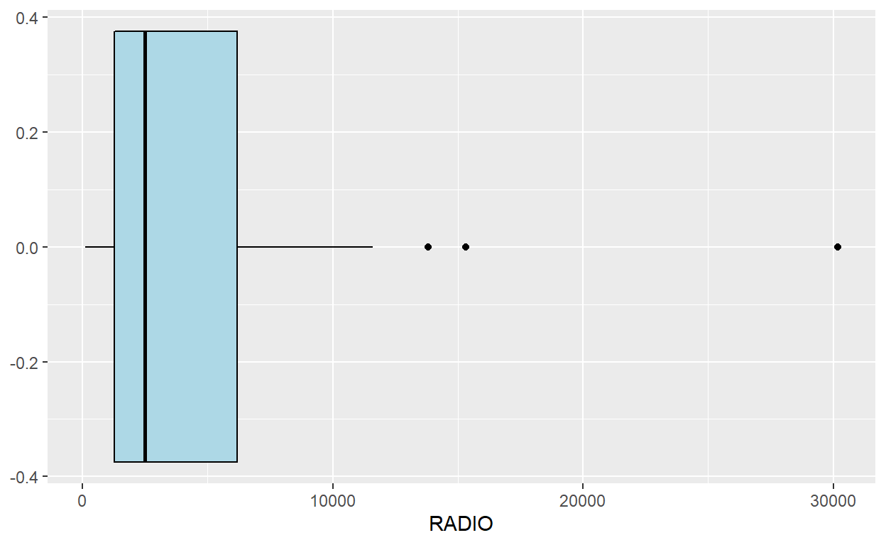
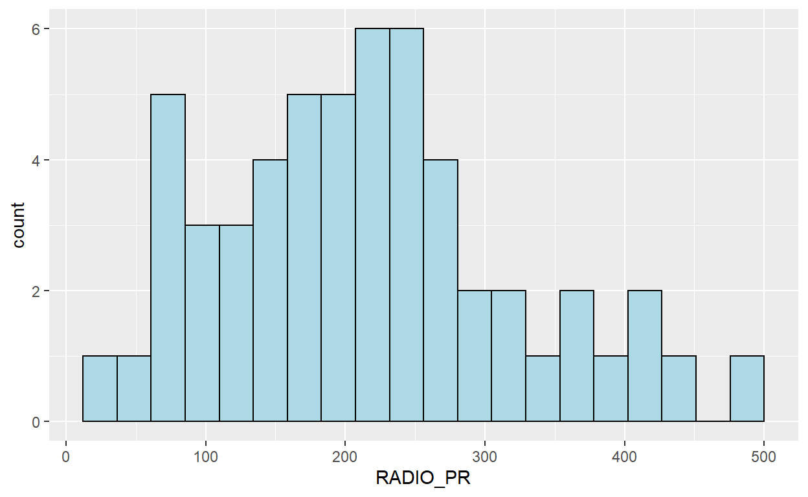
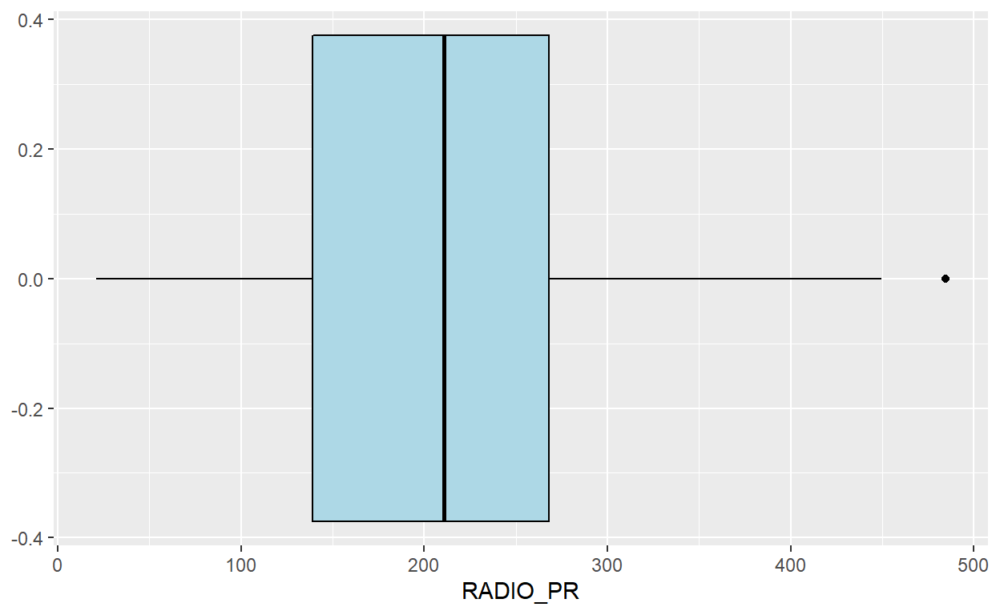
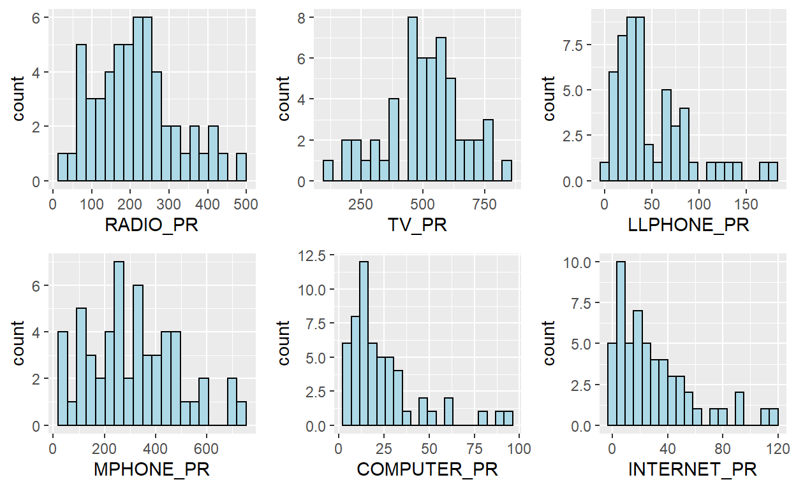

In Hands-on Exercise 8, I have learnt how to perform geographical segmentation by using appropriate R packages.I have also been exposed to R packages for performing cluster analysis and visualising clustering results.
In geobusiness and spatial policy, it is a common practice to delineate the market or planning area into homogeneous regions by using multivariate data. In this hands-on exercise, we are interested to delineate Shan State, Myanmar into homogeneous regions by using multiple Information and Communication technology (ICT) measures, namely: Radio, Television, Land line phone, Mobile phone, Computer, and Internet at home.
Two data sets will be used in this study. They are:
Both data sets are download from Myanmar Information Management Unit (MIMU)
Spatial data handling
+sf, rgdal and spdep
Attribute data handling
Choropleth mapping
Multivariate data visualisation and analysis
Cluster analysis
packages = c('rgdal', 'spdep', 'tmap', 'sf', 'ggpubr', 'cluster', 'factoextra', 'NbClust', 'heatmaply', 'corrplot', 'psych', 'tidyverse')
for (p in packages){
if(!require(p, character.only = T)){
install.packages(p)
}
library(p,character.only = T)
}
shan_sf <- st_read(dsn = "data/geospatial", layer = "myanmar_township_boundaries") %>%
filter(ST %in% c("Shan (East)", "Shan (North)", "Shan (South)"))
Reading layer `myanmar_township_boundaries' from data source
`C:\wlwong2018\IS415 Blog\_posts\2021-10-10-hands-on-exercise-8\data\geospatial'
using driver `ESRI Shapefile'
Simple feature collection with 330 features and 14 fields
Geometry type: MULTIPOLYGON
Dimension: XY
Bounding box: xmin: 92.17275 ymin: 9.671252 xmax: 101.1699 ymax: 28.54554
Geodetic CRS: WGS 84shan_sf
Simple feature collection with 55 features and 14 fields
Geometry type: MULTIPOLYGON
Dimension: XY
Bounding box: xmin: 96.15107 ymin: 19.29932 xmax: 101.1699 ymax: 24.15907
Geodetic CRS: WGS 84
First 10 features:
OBJECTID ST ST_PCODE DT DT_PCODE TS
1 163 Shan (North) MMR015 Mongmit MMR015D008 Mongmit
2 203 Shan (South) MMR014 Taunggyi MMR014D001 Pindaya
3 240 Shan (South) MMR014 Taunggyi MMR014D001 Ywangan
4 106 Shan (South) MMR014 Taunggyi MMR014D001 Pinlaung
5 72 Shan (North) MMR015 Mongmit MMR015D008 Mabein
6 40 Shan (South) MMR014 Taunggyi MMR014D001 Kalaw
7 194 Shan (South) MMR014 Taunggyi MMR014D001 Pekon
8 159 Shan (South) MMR014 Taunggyi MMR014D001 Lawksawk
9 61 Shan (North) MMR015 Kyaukme MMR015D003 Nawnghkio
10 124 Shan (North) MMR015 Kyaukme MMR015D003 Kyaukme
TS_PCODE ST_2 LABEL2 SELF_ADMIN ST_RG
1 MMR015017 Shan State (North) Mongmit\n61072 <NA> State
2 MMR014006 Shan State (South) Pindaya\n77769 Danu State
3 MMR014007 Shan State (South) Ywangan\n76933 Danu State
4 MMR014009 Shan State (South) Pinlaung\n162537 Pa-O State
5 MMR015018 Shan State (North) Mabein\n35718 <NA> State
6 MMR014005 Shan State (South) Kalaw\n163138 <NA> State
7 MMR014010 Shan State (South) Pekon\n94226 <NA> State
8 MMR014008 Shan State (South) Lawksawk <NA> State
9 MMR015013 Shan State (North) Nawnghkio\n128357 <NA> State
10 MMR015012 Shan State (North) Kyaukme\n172874 <NA> State
T_NAME_WIN
1 rdk;rdwf
2 yif;w,
3 &GmiH
4 yifavmif;
5 rbdrf;
6 uavm
7 z,fcHk
8 &yfapmuf
9 aemifcsdK
10 ausmufrJ
T_NAME_M3
1 <U+1019><U+102D><U+102F><U+1038><U+1019><U+102D><U+1010><U+103A>
2 <U+1015><U+1004><U+103A><U+1038><U+1010><U+101A>
3 <U+101B><U+103D><U+102C><U+1004><U+1036>
4 <U+1015><U+1004><U+103A><U+101C><U+1031><U+102C><U+1004><U+103A><U+1038>
5 <U+1019><U+1018><U+102D><U+1019><U+103A><U+1038>
6 <U+1000><U+101C><U+1031><U+102C>
7 <U+1016><U+101A><U+103A><U+1001><U+102F><U+1036>
8 <U+101B><U+1015><U+103A><U+1005><U+1031><U+102C><U+1000><U+103A>
9 <U+1014><U+1031><U+102C><U+1004><U+103A><U+1001><U+103B><U+102D><U+102F>
10 <U+1000><U+103B><U+1031><U+102C><U+1000><U+103A><U+1019><U+1032>
AREA geometry
1 2703.611 MULTIPOLYGON (((96.96001 23...
2 629.025 MULTIPOLYGON (((96.7731 21....
3 2984.377 MULTIPOLYGON (((96.78483 21...
4 3396.963 MULTIPOLYGON (((96.49518 20...
5 5034.413 MULTIPOLYGON (((96.66306 24...
6 1456.624 MULTIPOLYGON (((96.49518 20...
7 2073.513 MULTIPOLYGON (((97.14738 19...
8 5145.659 MULTIPOLYGON (((96.94981 22...
9 3271.537 MULTIPOLYGON (((96.75648 22...
10 3920.869 MULTIPOLYGON (((96.95498 22...glimpse(shan_sf)
Rows: 55
Columns: 15
$ OBJECTID <dbl> 163, 203, 240, 106, 72, 40, 194, 159, 61, 124, 71~
$ ST <chr> "Shan (North)", "Shan (South)", "Shan (South)", "~
$ ST_PCODE <chr> "MMR015", "MMR014", "MMR014", "MMR014", "MMR015",~
$ DT <chr> "Mongmit", "Taunggyi", "Taunggyi", "Taunggyi", "M~
$ DT_PCODE <chr> "MMR015D008", "MMR014D001", "MMR014D001", "MMR014~
$ TS <chr> "Mongmit", "Pindaya", "Ywangan", "Pinlaung", "Mab~
$ TS_PCODE <chr> "MMR015017", "MMR014006", "MMR014007", "MMR014009~
$ ST_2 <chr> "Shan State (North)", "Shan State (South)", "Shan~
$ LABEL2 <chr> "Mongmit\n61072", "Pindaya\n77769", "Ywangan\n769~
$ SELF_ADMIN <chr> NA, "Danu", "Danu", "Pa-O", NA, NA, NA, NA, NA, N~
$ ST_RG <chr> "State", "State", "State", "State", "State", "Sta~
$ T_NAME_WIN <chr> "rdk;rdwf", "yif;w,", "&GmiH", "yifavmif;", "rbdr~
$ T_NAME_M3 <chr> "<U+1019><U+102D><U+102F><U+1038><U+1019><U+102D><U+1010><U+103A>", "<U+1015><U+1004><U+103A><U+1038><U+1010><U+101A>", "<U+101B><U+103D><U+102C><U+1004><U+1036>", "<U+1015><U+1004><U+103A><U+101C><U+1031><U+102C><U+1004><U+103A><U+1038>", "<U+1019><U+1018><U+102D><U+1019><U+103A><U+1038>", "<U+1000><U+101C><U+1031><U+102C>"~
$ AREA <dbl> 2703.611, 629.025, 2984.377, 3396.963, 5034.413, ~
$ geometry <MULTIPOLYGON [°]> MULTIPOLYGON (((96.96001 23..., MULT~ict <- read_csv ("data/aspatial/Shan-ICT.csv")
summary(ict)
District Pcode District Name Township Pcode
Length:55 Length:55 Length:55
Class :character Class :character Class :character
Mode :character Mode :character Mode :character
Township Name Total households Radio Television
Length:55 Min. : 3318 Min. : 115 Min. : 728
Class :character 1st Qu.: 8711 1st Qu.: 1260 1st Qu.: 3744
Mode :character Median :13685 Median : 2497 Median : 6117
Mean :18369 Mean : 4487 Mean :10183
3rd Qu.:23471 3rd Qu.: 6192 3rd Qu.:13906
Max. :82604 Max. :30176 Max. :62388
Land line phone Mobile phone Computer Internet at home
Min. : 20.0 Min. : 150 Min. : 20.0 Min. : 8.0
1st Qu.: 266.5 1st Qu.: 2037 1st Qu.: 121.0 1st Qu.: 88.0
Median : 695.0 Median : 3559 Median : 244.0 Median : 316.0
Mean : 929.9 Mean : 6470 Mean : 575.5 Mean : 760.2
3rd Qu.:1082.5 3rd Qu.: 7177 3rd Qu.: 507.0 3rd Qu.: 630.5
Max. :6736.0 Max. :48461 Max. :6705.0 Max. :9746.0 Results above show that:
ict_derived <- ict %>%
mutate(`RADIO_PR` = `Radio`/`Total households`*1000) %>%
mutate(`TV_PR` = `Television`/`Total households`*1000) %>%
mutate(`LLPHONE_PR` = `Land line phone`/`Total households`*1000) %>%
mutate(`MPHONE_PR` = `Mobile phone`/`Total households`*1000) %>%
mutate(`COMPUTER_PR` = `Computer`/`Total households`*1000) %>%
mutate(`INTERNET_PR` = `Internet at home`/`Total households`*1000) %>%
rename(`DT_PCODE` =`District Pcode`,`DT`=`District Name`,
`TS_PCODE`=`Township Pcode`, `TS`=`Township Name`,
`TT_HOUSEHOLDS`=`Total households`,
`RADIO`=`Radio`, `TV`=`Television`,
`LLPHONE`=`Land line phone`, `MPHONE`=`Mobile phone`,
`COMPUTER`=`Computer`, `INTERNET`=`Internet at home`)
summary(ict_derived)
DT_PCODE DT TS_PCODE
Length:55 Length:55 Length:55
Class :character Class :character Class :character
Mode :character Mode :character Mode :character
TS TT_HOUSEHOLDS RADIO TV
Length:55 Min. : 3318 Min. : 115 Min. : 728
Class :character 1st Qu.: 8711 1st Qu.: 1260 1st Qu.: 3744
Mode :character Median :13685 Median : 2497 Median : 6117
Mean :18369 Mean : 4487 Mean :10183
3rd Qu.:23471 3rd Qu.: 6192 3rd Qu.:13906
Max. :82604 Max. :30176 Max. :62388
LLPHONE MPHONE COMPUTER INTERNET
Min. : 20.0 Min. : 150 Min. : 20.0 Min. : 8.0
1st Qu.: 266.5 1st Qu.: 2037 1st Qu.: 121.0 1st Qu.: 88.0
Median : 695.0 Median : 3559 Median : 244.0 Median : 316.0
Mean : 929.9 Mean : 6470 Mean : 575.5 Mean : 760.2
3rd Qu.:1082.5 3rd Qu.: 7177 3rd Qu.: 507.0 3rd Qu.: 630.5
Max. :6736.0 Max. :48461 Max. :6705.0 Max. :9746.0
RADIO_PR TV_PR LLPHONE_PR MPHONE_PR
Min. : 21.05 Min. :116.0 Min. : 2.78 Min. : 36.42
1st Qu.:138.95 1st Qu.:450.2 1st Qu.: 22.84 1st Qu.:190.14
Median :210.95 Median :517.2 Median : 37.59 Median :305.27
Mean :215.68 Mean :509.5 Mean : 51.09 Mean :314.05
3rd Qu.:268.07 3rd Qu.:606.4 3rd Qu.: 69.72 3rd Qu.:428.43
Max. :484.52 Max. :842.5 Max. :181.49 Max. :735.43
COMPUTER_PR INTERNET_PR
Min. : 3.278 Min. : 1.041
1st Qu.:11.832 1st Qu.: 8.617
Median :18.970 Median : 22.829
Mean :24.393 Mean : 30.644
3rd Qu.:29.897 3rd Qu.: 41.281
Max. :92.402 Max. :117.985 ggplot(data=ict_derived, aes(x=`RADIO`)) +
geom_histogram(bins=20, color="black", fill="light blue")

ggplot(data=ict_derived, aes(x=`RADIO`)) +
geom_boxplot(color="black", fill="light blue")

ggplot(data=ict_derived, aes(x=`RADIO_PR`)) +
geom_histogram(bins=20, color="black", fill="light blue")

ggplot(data=ict_derived, aes(x=`RADIO_PR`)) +
geom_boxplot(color="black", fill="light blue")

radio <- ggplot(data=ict_derived,
aes(x= `RADIO_PR`)) +
geom_histogram(bins=20,
color="black",
fill="light blue")
tv <- ggplot(data=ict_derived,
aes(x= `TV_PR`)) +
geom_histogram(bins=20,
color="black",
fill="light blue")
llphone <- ggplot(data=ict_derived,
aes(x= `LLPHONE_PR`)) +
geom_histogram(bins=20,
color="black",
fill="light blue")
mphone <- ggplot(data=ict_derived,
aes(x= `MPHONE_PR`)) +
geom_histogram(bins=20,
color="black",
fill="light blue")
computer <- ggplot(data=ict_derived,
aes(x= `COMPUTER_PR`)) +
geom_histogram(bins=20,
color="black",
fill="light blue")
internet <- ggplot(data=ict_derived,
aes(x= `INTERNET_PR`)) +
geom_histogram(bins=20,
color="black",
fill="light blue")
ggarrange(radio, tv, llphone, mphone, computer, internet,
ncol = 3,
nrow = 2)
